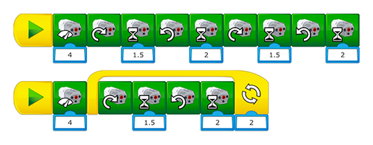

プログラミング的思考スキル
この課題で、前時の学習で得た知識を応用できているかを評価します。
プログラミングヘルプ
形を描きながら進むには反復活動が必要となり、
ここではループ構造を用いたプログラムを作ります。例えば、以下の2つのプログラミングが達成することは同じですが、ループを使うことによって、より短くシンプルにすることができます。

応用問題
以下の算数に関連する問題を解くことができます。
-
パーツのうち2つは月面に完璧に着陸しました。ほかの2つのパーツは 前の2つと平行に、1列に着陸しました。パーツが着陸したと考えられる場所を示して、これらを回収するようにロボットをプログラミングします。
-
2つのパーツは20cm間隔で着陸しました。ほかのパーツも2つ着陸し、合計4つのパーツで長方形ができました。外周は60cm未満です。パーツが着陸したと考えられる場所を示して、これらを回収するようにロボットをプログラミングします。
-
2台のロボットで4つのパーツを回収する必要があります。2台のロボットは基地に同時に到着しなければなりません。
-
オリジナルのパーツを組み立てて、月面基地の組み立てに関して独自のミッションを作成します。